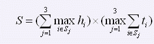

Tom不喜欢那种一字长龙式的大书架，他只想要一个小书柜来存放他的系列工具书。Tom打算把书柜放在桌子的后面，这样需要查书的时候就可以不用起身离开了。显然，这种书柜不能太大，Tom希望它的体积越小越好。另外，出于他的审美要求，他只想要一个三层的书柜。为了物尽其用，Tom规定每层必须至少放一本书。现在的问题是，Tom怎么分配他的工具书，才能让木匠造出最小的书柜来呢？
Tom很快意识到这是一个数学问题。每本书都有自己的高度hi和厚度ti。我们需要求的是一个分配方案，也就是要求把所有的书分配在S1、S2和S3三个非空集合里面的一个，不重复也不遗漏，那么，很明显，书柜正面表面积（S）的计算公式就是：

由于书柜的深度是固定的（显然，它应该等于那本最宽的书的长度），所以要求书柜的体积最小就是要求S最小。Tom离答案只有一步之遥了。不过很遗憾，Tom并不擅长于编程，于是他邀请你来帮助他解决这个问题。